TRIP OVERVIEW
Day 1 – Sainte-Chapelle · Conciergerie · Rue Mouffetard · Les Deux Magots
Day 2 – Place des Vosges · Musée Carnavalet · Palais Garnier · Sacré-Cœur
Day 3 – Arc de Triomphe · Eiffel Tower · Rue Cler · Musée de l'Orangerie
Day 4 – 🚆 Train Day — Giverny
Day 5 – 🚆 Train Day — Reims
Day 6 – 🚆 Train Day — Chartres
Day 1
🏨 From Hotel: 🚕 16 min → Sainte-Chapelle
1. Sainte-Chapelle
↳ A 13th-century royal chapel whose upper level is 15 stained-glass walls — the most intact Gothic glass in Europe, built by Louis IX to house the Crown of Thorns. Go on a bright morning when the light fires the windows.
🏛️ Daily 9:00am - 7:00pm
⏰ ~1h
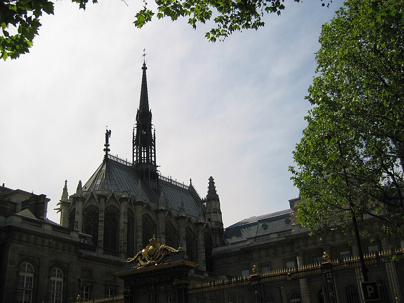
🚶 2 min · 🚕 2 min → Conciergerie
2. Conciergerie
↳ The medieval royal palace turned Revolutionary prison — the Hall of the Men-at-Arms is the largest surviving Gothic secular hall in Europe, and Marie-Antoinette's reconstructed cell marks where she waited for the guillotine.
🏛️ Daily 9:30am - 6:00pm
⏰ ~1h
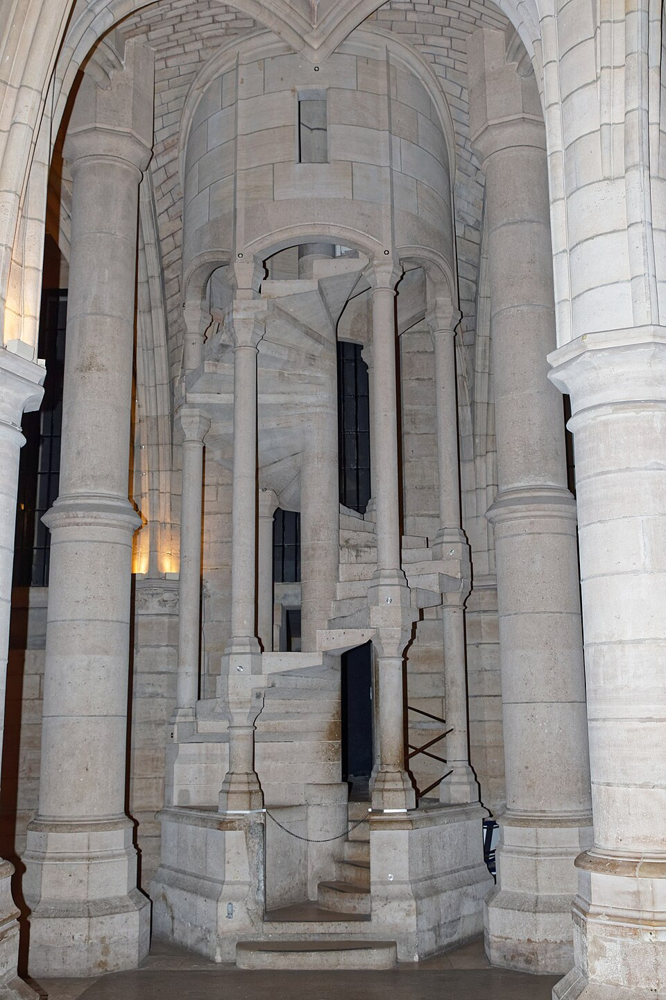
🚶 24 min · 🚕 8 min → Rue Mouffetard
3. Rue Mouffetard · food street stroll
↳ A pedestrianised Roman road turned market hill — open-front fromageries, boulangeries, rôtisseries, a daily produce market at the bottom, and terrace cafés where locals eat lunch. Walk top to bottom, pastry in hand.

🚶 28 min · 🚕 9 min → Les Deux Magots
4. Les Deux Magots
↳ The literary café of Saint-Germain — Sartre and de Beauvoir's daily office, Hemingway's watering hole, Picasso's meeting spot. Order a café crème and the house hot chocolate, poured thick from a silver jug, from the terrace.
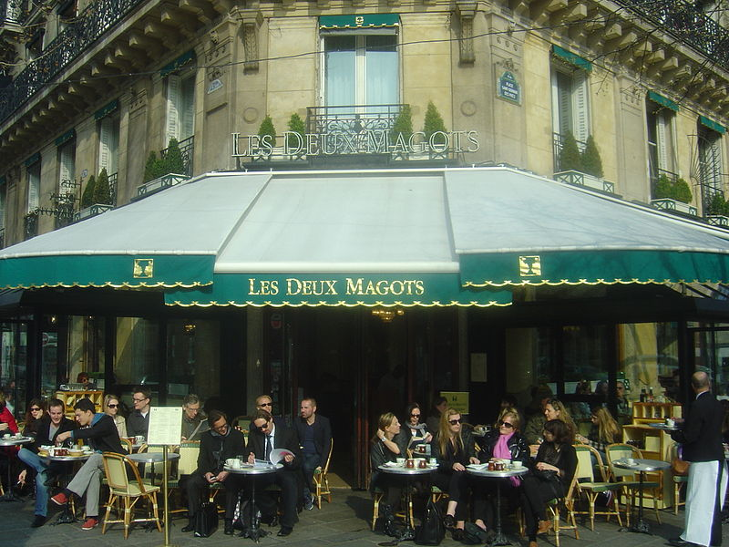
🚕 14 min → hotel
Day 2
🏨 From Hotel: 🚕 23 min → Place des Vosges
1. Place des Vosges & Le Marais stroll
↳ The quarter Haussmann forgot — 17th-century hôtels particuliers, medieval lanes, and hidden courtyards still intact. Place des Vosges, Henri IV's 1612 pink-brick arcaded square, anchors a self-guided wander through Rue des Rosiers and the Village Saint-Paul.
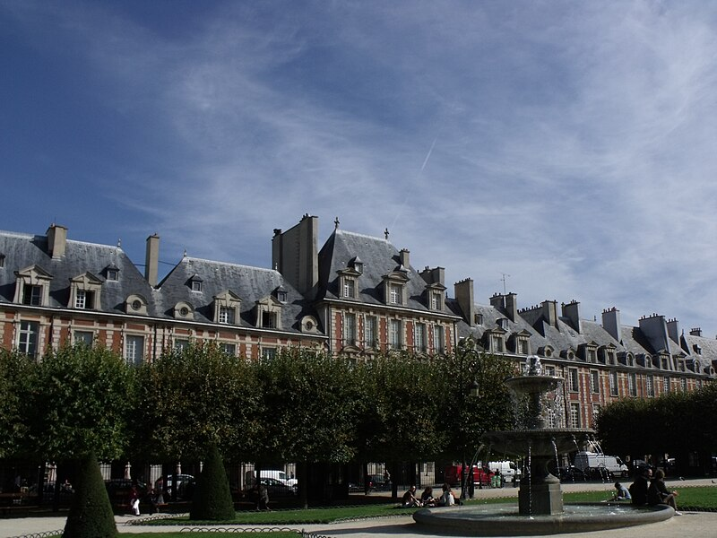
🚶 6 min · 🚕 3 min → Musée Carnavalet
2. Musée Carnavalet
↳ The history of Paris told across two Renaissance mansions and 3,800 works — Revolutionary relics, Proust's bedroom, shop signs, and period rooms. The permanent collection is free, and the courtyard gardens are a Marais secret.
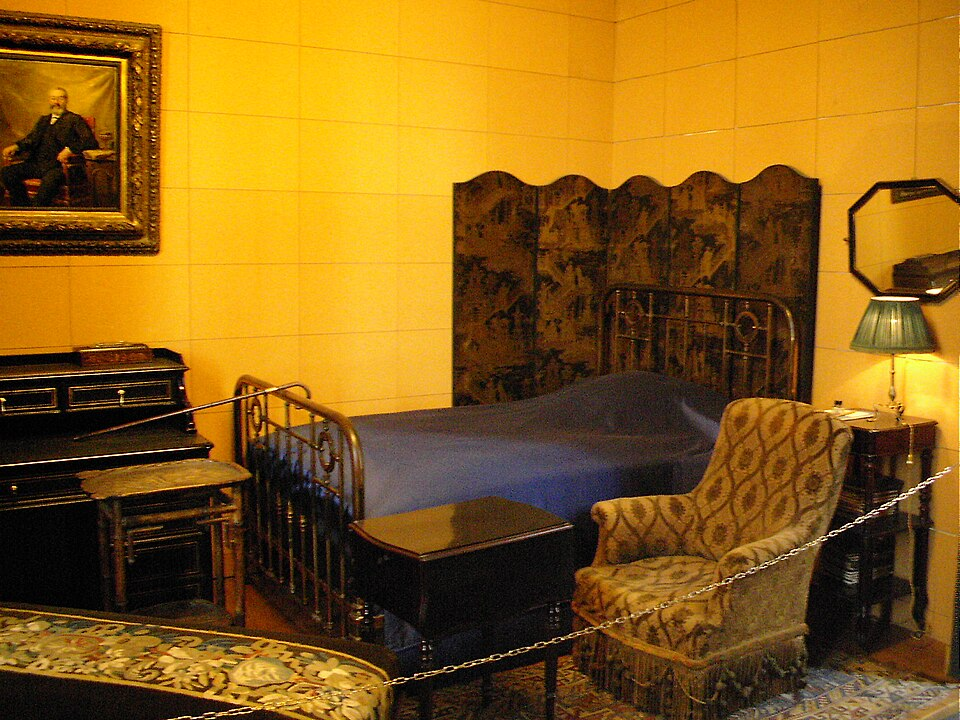
🚕 14 min → Palais Garnier
3. Palais Garnier · Opéra
↳ Garnier's 1875 opera house — the building that defined Second Empire excess. Grand Staircase in white-pink-green marble, a cathedral-scale Grand Foyer, and Chagall's 1964 ceiling floating over the red-and-gold auditorium.
🏛️ Daily 10:00am - 5:00pm
⏰ ~1h 15min
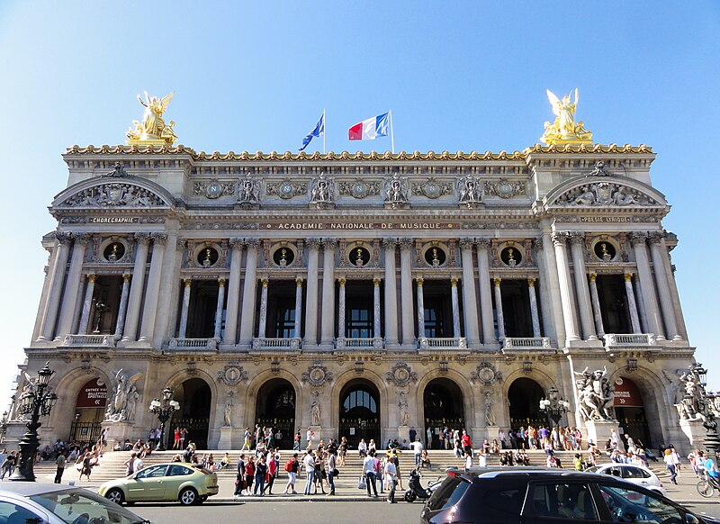
🚶 28 min · 🚕 9 min → Sacré-Cœur / Montmartre
4. Sacré-Cœur & Montmartre
↳ The village Paris absorbed — winding lanes, the Place du Tertre painters' square, and the white travertine Basilique du Sacré-Cœur crowning the hill. Climb for the broadest free view over the whole city; self-guided, no tour needed.
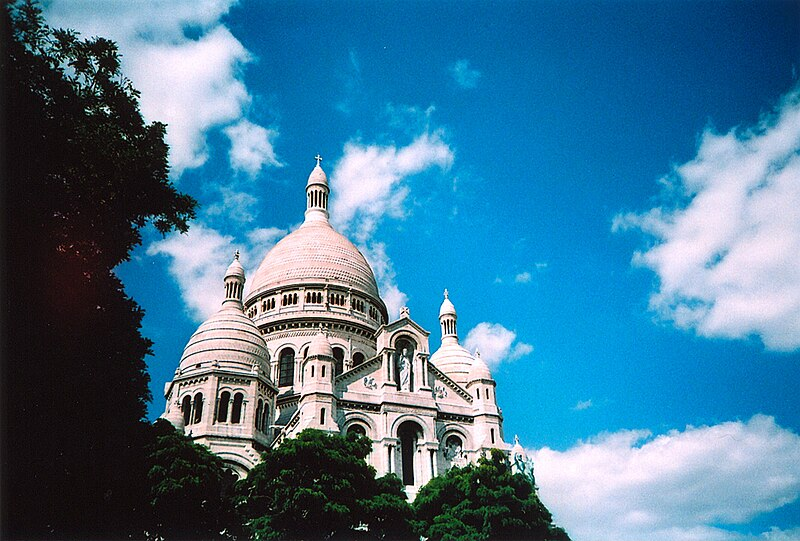
🚕 16 min → hotel
Day 3
🏨 From Hotel: 🚶 16 min · 🚕 5 min → Arc de Triomphe
1. Arc de Triomphe · rooftop
↳ Napoleon ordered it in 1806; it took 30 years to build. The 284-step climb ends on the best axial view in Paris — 12 avenues radiating out, Champs-Élysées to the Louvre one way, La Défense the other.
🏛️ Daily 10:00am - 10:30pm
⏰ ~1h
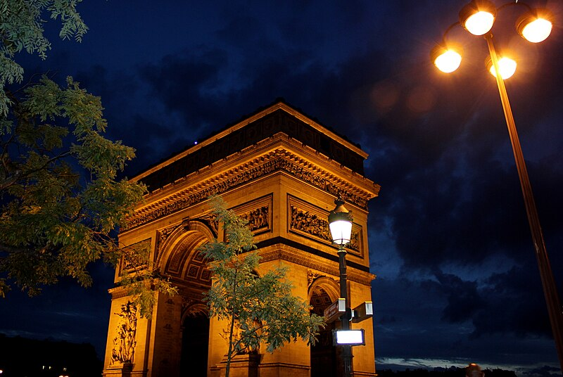
🚶 27 min · 🚕 9 min → Eiffel Tower
2. Eiffel Tower
↳ Gustave Eiffel's 1889 iron tower — the World's Fair showpiece Paris refused to take down. Still the highest observation deck in the city and the clearest way to read its geography: Seine, La Défense, Montmartre, Montparnasse.

🚶 12 min · 🚕 4 min → Rue Cler
3. Rue Cler · food street stroll
↳ The 7th-arrondissement market street Rick Steves built his Paris chapter around — pedestrianised, two blocks, lined with family-run fromageries, boulangeries, and rôtisseries that have supplied the quartier for generations.

🚶 23 min · 🚕 8 min → Musée de l'Orangerie
4. Musée de l'Orangerie
↳ Eight wall-sized Monet Water Lilies canvases in two oval rooms the painter designed — lit from above, no right angles. One of the few museum experiences in Paris that earns the word immersive.
🏛️ Wednesday - Monday 9:00am - 6:00pm
🚫 Closed Tuesday
⏰ ~1h 30min

🚶 20 min · 🚕 7 min → hotel
Day 4 – Train Day — Giverny
🏨 From Hotel: 🚶 22 min · 🚕 7 min → Gare Saint-Lazare
🚊 Paris Saint-Lazare → Vernon-Giverny · SNCF Intercités · 50min
🎫 book at: sncf-connect.com
8:20am Saint-Lazare → 9:10am Vernon
9:20am Saint-Lazare → 10:10am Vernon
10:20am Saint-Lazare → 11:10am Vernon
🚉 ARRIVE Vernon: 🚕 12 min → Fondation Monet
1. Fondation Monet — House & Gardens
↳ Monet bought this house in 1883 and spent 43 years planting the garden that became his greatest painting — the lily pond, the Japanese bridge, and the Clos Normand of irises and roses in his exact colour logic. Closed in winter.
🏛️ Daily 9:30am - 6:00pm
⏰ ~2h
⚠️ Open late March to early November only
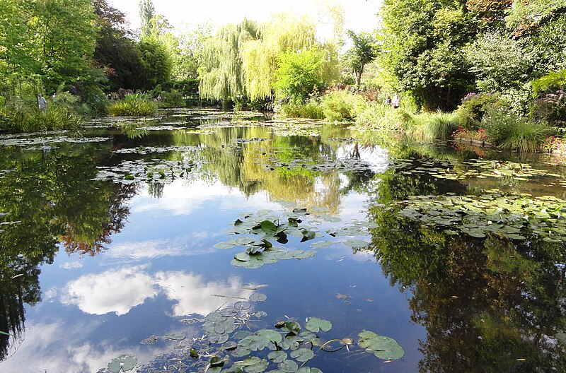
🚶 3 min · 🚕 2 min → Musée des Impressionnismes
2. Musée des Impressionnismes Giverny
↳ The village's own Impressionism museum, a few doors from Monet's gate — rotating exhibitions on the movement and the Giverny art colony, with a garden of its own designed in drifts of single-colour planting.
🏛️ Daily 10:00am - 6:00pm
⏰ ~1h
⚠️ Open late March to early November only
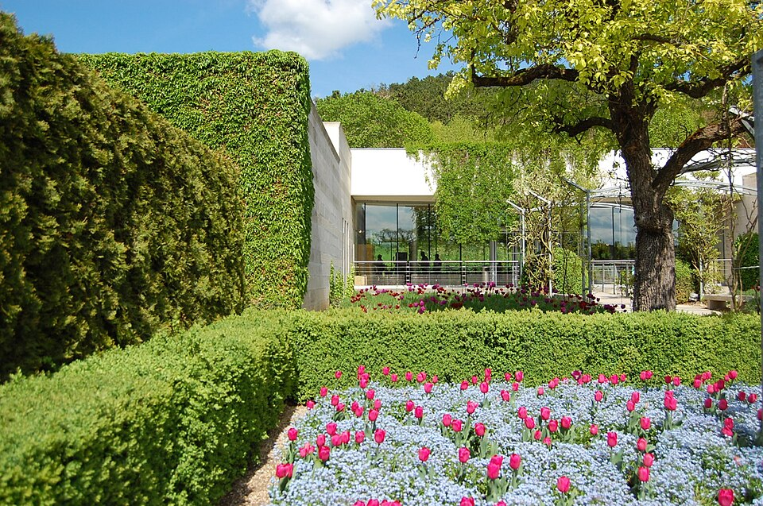
🚶 5 min · 🚕 2 min → Giverny Village & Monet's grave
3. Giverny Village & Église Sainte-Radegonde
↳ The single lane of stone-and-flower houses that the Giverny art colony settled in the 1880s. At the top sits the 11th-century church of Sainte-Radegonde and the village cemetery, where Monet and his family are buried.
No pictures found.
🚕 15 min → Vernon station
🚊 Vernon-Giverny → Paris Saint-Lazare · SNCF Intercités · 50min
🎫 book at: sncf-connect.com
5:10pm Vernon → 6:00pm Saint-Lazare
6:10pm Vernon → 7:00pm Saint-Lazare
7:25pm Vernon → 8:15pm Saint-Lazare
🚉 ARRIVE Paris Saint-Lazare: 🚶 22 min · 🚕 7 min → hotel
Day 5 – Train Day — Reims
🏨 From Hotel: 🚕 19 min → Gare de l'Est
🚄 Paris Gare de l'Est → Reims · SNCF TGV inOui · 45min
🎫 book at: sncf-connect.com
8:41am Gare de l'Est → 9:27am Reims
9:41am Gare de l'Est → 10:27am Reims
10:58am Gare de l'Est → 11:44am Reims
🚉 ARRIVE Reims: 🚶 10 min · 🚕 4 min → Reims Cathedral
1. Reims Cathedral
↳ The cathedral where 25 French kings were crowned — High Gothic, 2,300 sculpted figures on the west front, including the famous Smiling Angel, and a Marc Chagall stained-glass window in the axial chapel. UNESCO World Heritage Site.
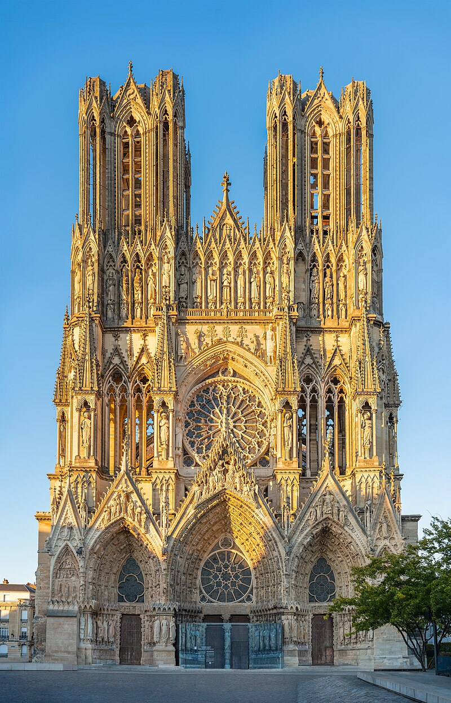
🚶 2 min · 🚕 2 min → Palais du Tau
2. Palais du Tau
↳ The former archbishops' palace right beside the cathedral, where French kings dressed for coronation and feasted afterward. Now a museum holding the cathedral's original statuary, the coronation regalia, and the great Gothic banqueting hall.
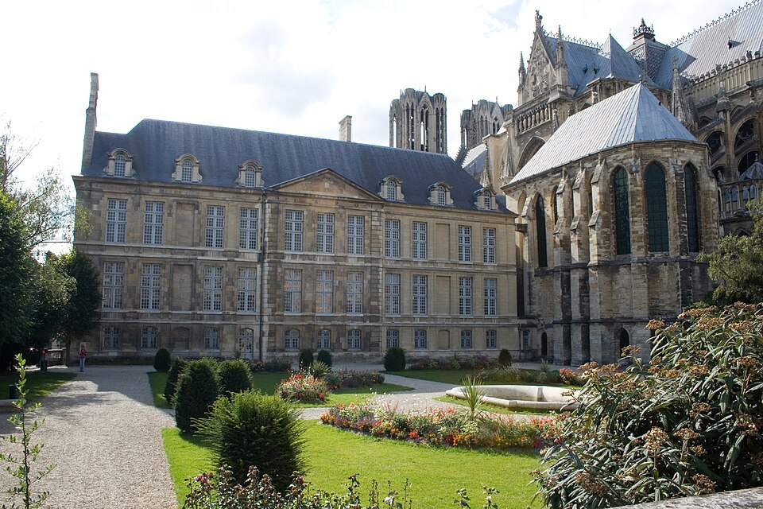
🚶 18 min · 🚕 6 min → Champagne Cellars
3. Champagne Cellars · Taittinger
↳ Beneath Reims run miles of Gallo-Roman chalk crayères now used to age Champagne. Taittinger's cellars, carved partly from a 4th-century quarry under a former abbey, give the clearest single-house tour-and-tasting in the city centre. Booking required.
🏛️ Daily 9:30am - 4:30pm
⏰ ~1h 15min
⚠️ Cellar visits by advance booking only
No pictures found.
🚕 8 min → Reims station
🚄 Reims → Paris Gare de l'Est · SNCF TGV inOui · 45min
🎫 book at: sncf-connect.com
6:13pm Reims → 6:59pm Gare de l'Est
7:14pm Reims → 8:00pm Gare de l'Est
8:14pm Reims → 9:00pm Gare de l'Est
🚉 ARRIVE Paris Gare de l'Est: 🚕 19 min → hotel
Day 6 – Train Day — Chartres
🏨 From Hotel: 🚕 17 min → Paris Montparnasse
🚊 Paris Montparnasse → Chartres · SNCF TER · 1h 10min
🎫 book at: sncf-connect.com
8:40am Montparnasse → 9:50am Chartres
9:11am Montparnasse → 10:20am Chartres
9:40am Montparnasse → 10:50am Chartres
🚉 ARRIVE Chartres: 🚶 8 min · 🚕 3 min → Chartres Cathedral
1. Chartres Cathedral
↳ The benchmark High Gothic cathedral, completed 1220 and largely untouched since. 176 medieval stained-glass panels in the famous "Chartres blue," a labyrinth set into the nave floor, and two mismatched spires — one Romanesque, one Flamboyant — over the west front. UNESCO World Heritage Site.
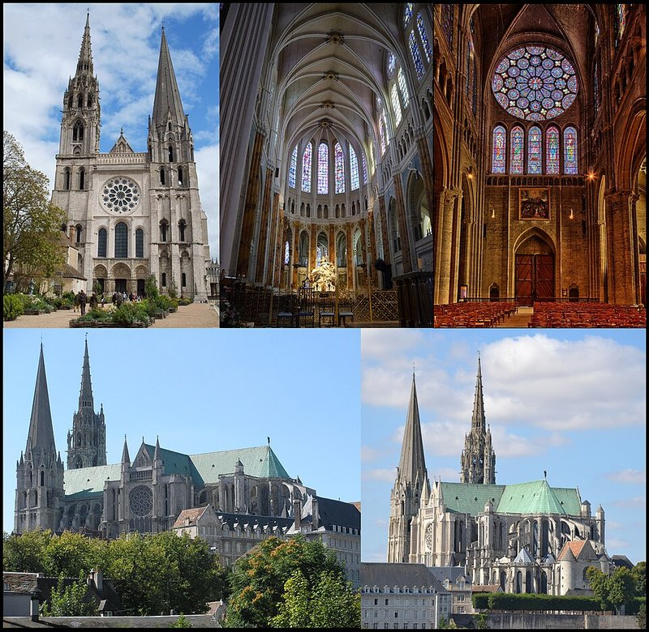
🚶 3 min · 🚕 2 min → Centre International du Vitrail
2. Centre International du Vitrail
↳ France's national stained-glass research center, housed in the 13th-century Loëns granary 50 m from the cathedral. The complement to seeing the windows themselves: how medieval craftsmen made the glass, what the symbols meant, and how restoration works today. Bilingual EN/FR panels.
🏛️ Tuesday - Friday 10:00am - 12:30pm · 2:00pm - 6:00pm
🏛️ Saturday - Sunday 10:00am - 12:30pm · 2:30pm - 6:00pm
🚫 Closed Monday
⏰ ~1h
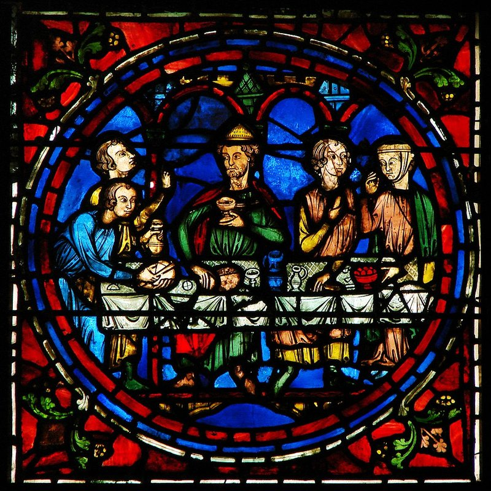
🚶 6 min · 🚕 3 min → Old Town & Eure Riverside
3. Old Town & Eure Riverside
↳ Drop from the cathedral plateau through the Tertres staircases into the lower town: half-timbered houses on Rue des Écuyers and Rue Chantault, surviving medieval wash-houses along the Eure, and the Pont Bouju view back up to the cathedral. The classic post-cathedral loop, walkable in any direction.
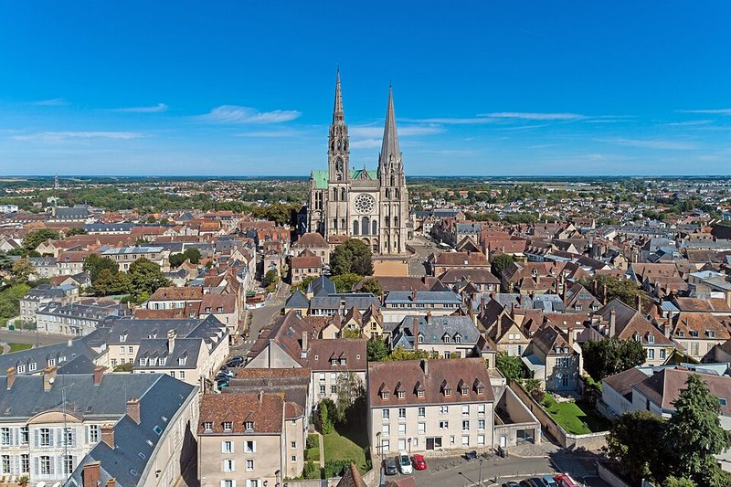
🚶 12 min · 🚕 4 min → Chartres station
🚊 Chartres → Paris Montparnasse · SNCF TER · 1h 10min
🎫 book at: sncf-connect.com
5:30pm Chartres → 6:40pm Montparnasse
6:00pm Chartres → 7:10pm Montparnasse
6:30pm Chartres → 7:40pm Montparnasse
🚉 ARRIVE Paris Montparnasse: 🚕 17 min → hotel
🗓️ Weekly Closures
National Museums · Closed Tuesday
Municipal Museums & Market Streets · Closed Monday
Boutiques & Department Stores · Closed Sunday
📅 Tours
Viator
📅 1. Eiffel Tower Guided Tour by Stairs with Optional Summit by Lift · Viator · 4.7⭐ · 3800+ reviews
↳ Guided stair climb of the Eiffel Tower to the 2nd floor with a host, plus an optional lift to the summit for the panoramic Seine-and-skyline view.
🕐 9:00am · ⏳ 2h · 👥 small group
🚶 29 min · 🚕 9 min
↳ Île de la Cité walk covering the stained-glass upper chapel of Sainte-Chapelle and the Conciergerie, Marie-Antoinette's prison, with pre-reserved skip-the-line entry.
🕐 9:30am · ⏳ 2h 30min · 👥 small group
🚕 16 min
↳ Round-trip small-group half-day to Giverny — Monet's house and the Flower and Water gardens with the Japanese bridge that inspired the Water Lilies — with transport from central Paris.
🕐 8:15am · ⏳ 4h 30min · 👥 small group
🚶 30 min · 🚕 10 min
📅 4. Champagne Day Trip with 6 Tastings · Reims and Winery from Paris · Viator · 4.8⭐ · 900+ reviews
↳ Full-day small-group trip to the Champagne region — the coronation cathedral of Reims plus cellar visits and six tastings at a major Champagne house and a family grower, round-trip from Paris.
🕐 7:45am · ⏳ 11h · 👥 8
🚶 30 min · 🚕 10 min
📅 5. Giverny with Monet's House and Gardens Half-Day Tour from Paris · Viator · 4.7⭐ · 2100+ reviews
↳ Coach half-day from Paris to Giverny with reserved entry to Monet's house and gardens, an alternative departure for the day-trip if the small-group slot is full.
🕐 8:30am · ⏳ 6h · 👥 small group
🚶 30 min · 🚕 10 min
GetYourGuide
↳ Round-trip guided half-day to Giverny — Monet's house and the Flower and Japanese water-lily gardens — with an English-speaking guide and transport from central Paris.
🕐 8:30am · ⏳ 5h · 👥 small group
🚶 30 min · 🚕 10 min
↳ Reserved-access guided sightseeing tour of the Eiffel Tower — the story of the iron tower told by a host, then up to the 2nd floor with the option to continue to the summit by lift.
🕐 9:30am · ⏳ 2h · 👥 small group
🚶 29 min · 🚕 9 min
↳ Guided walk through the 19th-century covered passages of the Grands Boulevards — the glass-roofed arcades of shops, cafés, and galleries that pre-date the department store.
🕐 10:00am · ⏳ 1h 30min · 👥 small group
🚶 28 min · 🚕 10 min
↳ Full-day coach trip from Paris to the island abbey of Mont Saint-Michel — the medieval Benedictine monastery rising from the Normandy tidal flats — with a guided visit and free time in the village.
🕐 7:00am · ⏳ 14h · 👥 small group
🚶 30 min · 🚕 10 min
↳ Full-day guided trip to the Normandy landing beaches — Omaha Beach, the American Cemetery at Colleville, and Pointe du Hoc — with a historian guide and lunch, round-trip from Paris.
🕐 7:15am · ⏳ 13h · 👥 small group
🚶 30 min · 🚕 10 min
TripAdvisor
↳ Round-trip small-group half-day to Giverny — Monet's home and the Flower and Water gardens with the Japanese bridge — with a guide and transport from central Paris.
🕐 8:15am · ⏳ 4h 30min · 👥 small group
🚶 16 min · 🚕 5 min
↳ Skip-the-line guided Eiffel Tower tour to the 2nd-floor observation deck with summit access, the tower's history told by a small-group guide.
🕐 10:30am · ⏳ 2h · 👥 small group
🚶 22 min · 🚕 7 min
↳ Île de la Cité Gothic tour — Sainte-Chapelle's stained glass and the Conciergerie — with skip-the-line tickets and a licensed guide.
🕐 2:30pm · ⏳ 2h 30min · 👥 small group
🚕 16 min
↳ Guided walking tour through the historic heart of Paris — the Île de la Cité, the riverside quays, and the Right Bank landmarks — led by a local guide.
🕐 10:00am · ⏳ 2h 15min · 👥 group
🚕 16 min
📅 5. Eiffel Tower Guided Tour by Stairs with Optional Summit by Lift · TripAdvisor · 4.8⭐ · 3000+ reviews
↳ Guided climb of the Eiffel Tower by stairs to the 2nd floor with a host, with the option to continue to the summit by lift for the panoramic view over the city and the Seine.
🕐 9:00am · ⏳ 2h · 👥 small group
🚶 29 min · 🚕 9 min
☕ Cappuccino
Noir · 4.5⭐ · 500+ reviews
🏛️ Monday - Friday 8:00am - 6:00pm
🏛️ Saturday - Sunday 9:00am - 6:00pm
🚶 5 min · 🚕 3 min
Café Nuances · 4.4⭐ · 600+ reviews
Bacha Coffee · 4.5⭐ · 1000+ reviews
Café Fino · 4.6⭐ · 500+ reviews
Café Joyeux · 4.5⭐ · 2000+ reviews
🫕 Restaurants Near Hotel
Le Boudoir · 4.4⭐ · 700+ reviews
↳ Modern French bistronomy · charcuterie maison, seasonal tasting plates.
🏛️ Monday - Friday 12:00pm - 2:30pm · 7:30pm - 10:30pm
🚫 Closed Saturday & Sunday
🚶 4 min · 🚕 3 min
Chez Savy · 4.4⭐ · 800+ reviews
↳ Aveyronnais bistro · 1930s Art Deco room — foie gras, côte de bœuf, soufflé.
🏛️ Monday - Friday 12:00pm - 2:30pm · 7:00pm - 10:30pm
🚫 Closed Saturday & Sunday
🚶 8 min · 🚕 5 min
Chez André · 4.2⭐ · 2000+ reviews
↳ Classic 1936 Parisian bistro · escargots, frog legs, onion soup, crème brûlée.
🏛️ Daily 12:00pm - 12:00am
🚶 9 min · 🚕 5 min
Le Mini Palais · 4.2⭐ · 1000+ reviews
↳ Grand Palais brasserie · seasonal French menu by Eric Frechon · terrace.
🏛️ Daily 12:00pm - 11:00pm
🚶 13 min · 🚕 5 min
Dada · 4.3⭐ · 2000+ reviews
↳ Classic Parisian brasserie · all-day terrace, steak tartare, croque-madame.
🏛️ Daily 7:00am - 11:00pm
🚶 18 min · 🚕 8 min
🍽️ Downtown Restaurants
Le Procope · 4.4⭐ · 1000+ reviews
↳ Paris's oldest brasserie · 1686 — Voltaire, Rousseau, Diderot's table, 6e.
🏛️ Sunday - Wednesday 11:30am - 12:00am
🏛️ Thursday - Saturday 11:30am - 1:00am
Bouillon Chartier · 4.3⭐ · 40000+ reviews
↳ 1896 listed bouillon · grand belle-époque hall, classic French at modest prices.
🏛️ Daily 11:30am - 12:00am
Le Caveau du Palais · 4.0⭐ · 500+ reviews
↳ Classic French bistro on Place Dauphine · the island's oldest terrace, 1e.
🏛️ Daily 12:00pm - 10:30pm
Brasserie Lipp · 4.0⭐ · 5000+ reviews
↳ 1880 listed brasserie · Alsatian classics in a Monument historique room, 6e.
🏛️ Daily 9:00am - 12:45am
Chez Janou · 4.3⭐ · 8000+ reviews
↳ Provençal bistro near Place des Vosges · pastis and chocolate mousse, 3e.
🏛️ Daily 12:00pm - 12:00am
🍮 Local Tastes
Macaron
↳ Two almond-meringue shells sandwiching flavoured ganache or buttercream. Smooth domed shell with a "foot" — the Parisian version every pastry chef copies worldwide.
Croque-Madame
↳ Grilled ham-and-gruyère sandwich topped with mornay sauce and a sunny-side-up egg. The "madame" is the egg — the "monsieur" drops it. A Parisian café classic since around 1910.
Paris-Brest
↳ Wheel-shaped choux ring filled with hazelnut praline cream, dusted with icing sugar, topped with almonds. Created in 1910 to mark the Paris–Brest–Paris bicycle race — the wheel shape is deliberate.
Soupe à l'Oignon Gratinée
↳ Slow-caramelised onion soup in beef stock, topped with country bread and molten Gruyère browned into a lid. A Les Halles standard that became a brasserie institution.
🎭 Shows, Performances & Concerts
Palais Garnier — Opera & Ballet
↳ The Paris Opera's house for ballet and chamber opera, under Chagall's painted ceiling. Book the season calendar ahead.
🚶 27 min · 🚕 9 min
Sainte-Chapelle — Classical Concerts
↳ Candle-lit concerts under Sainte-Chapelle's stained-glass walls — Vivaldi, Pachelbel, Albinoni — in 13th-century vault acoustics.
🚕 16 min
Opéra Bastille
↳ The Paris Opera's modern house · 1989, Carlos Ott — 2,700 seats for grand opera and large ballet, complementing Garnier.
🚕 20 min
Philharmonie de Paris
↳ Jean Nouvel's concert hall in Parc de la Villette — home of the Orchestre de Paris, among Europe's most acoustically precise.
🚕 24 min
🚌 Getting Around
🚕 Uber
🚕 Bolt
🚕 FreeNow
🚎 Tram
↳ Lines run mostly around the city's outer edge and the inner suburbs.
Paris has a tram system — operated by RATP. No tram rides on this trip.
🚆 Train Stations Near Hotel
🚊 Gare Saint-Lazare
Transilien J, L → Paris suburbs · Intercités → Normandy.
🚶 22 min · 🚕 7 min
🚄 Gare du Nord
RER B → CDG Airport, Paris suburbs · TGV inOui, Eurostar → Lille, London, Brussels.
🚕 15 min
⛲️ Day Trips by Train
Fontainebleau · 40 min
↳ A royal château with 1,500 rooms spanning every French style — François I Renaissance to Napoleon III Empire — set at the edge of a great forest. Transilien R trains depart Gare de Lyon direct to Fontainebleau-Avon.
🎫 book at: sncf-connect.com or Omio
Amiens · 1h 10 min
↳ Notre-Dame d'Amiens — the largest Gothic cathedral in France, twice the volume of Notre-Dame de Paris, with the original polychrome interior intact. Direct TGV, Gare du Nord.
🎫 book at: sncf-connect.com or Omio
Rouen · 1 hr 25 min
↳ Normandy's medieval capital — Rouen Cathedral is the Gothic façade Monet painted 30 times. The half-timbered lanes around the Gros-Horloge are the best-preserved in northern France, and Place du Vieux-Marché marks where Joan of Arc was burned in 1431.
🎫 book at: sncf-connect.com or Omio
Strasbourg · 1 hr 48 min
↳ The Franco-German capital of Alsace — Petite France's canals and timbered winemakers' houses are a UNESCO quarter. The pink-sandstone cathedral spire was Europe's tallest until 1874. Compact, walkable, lunch in a winstub.
🎫 book at: sncf-connect.com or Omio
Lyon · 2 hrs
↳ France's second city and gastronomic capital — Vieux Lyon's Renaissance traboules, the hilltop basilica of Fourvière with Roman-amphitheatre remains, and the silk-weavers' Croix-Rousse. A bouchon lunch is as non-negotiable as any monument.
🎫 book at: sncf-connect.com or Omio
⭐ Michelin Restaurants
⭐⭐⭐ Épicure
↳ Classic French · Le Bristol · Chef Arnaud Faye · grand garden-view room.
🚶 7 min · 🚕 3 min
⭐⭐⭐ Alléno Paris au Pavillon Ledoyen
↳ Modern French · sauce-forward contemporary cuisine · Chef Yannick Alléno.
🚶 13 min · 🚕 6 min
⭐⭐⭐ Pierre Gagnaire
↳ Creative French · avant-garde multi-plate tasting experience.
🚶 13 min · 🚕 6 min
⭐⭐⭐ Le Cinq
↳ Classic French · Four Seasons George V · grand belle-époque dining room.
🚶 11 min · 🚕 8 min
⭐⭐⭐ Le Pré Catelan
↳ Classic French · Chef Frédéric Anton · Bois de Boulogne pavilion setting.
🚕 17 min
Not shown: 5⭐⭐⭐ · 16⭐⭐ · 103⭐ more in Paris
❗️ Heads Up
❗️ Palais Garnier — Auditorium & security
↳ The auditorium closes often for rehearsals with no warning or refund; timed-entry tickets still face 20–30 min security queues.
Workaround: Best odds for the auditorium are Tue/Thu 10–11am; arrive before your slot and pad a 30 min buffer.
❗️ Fondation Monet Giverny — Seasonal closure
↳ Monet's house and gardens close from early November to late March — the Giverny day trip does not run in winter.
Workaround: Confirm the season-opening dates with the Fondation Monet before planning Day 4; swap in a Rouen or Chartres day if closed.
Skipping: The Louvre · Versailles · Notre Dame · Musée d'Orsay · Musée Rodin · Seine river cruise · Pont Alexandre III · Panthéon · Moulin Rouge · Disneyland Paris · Catacombs · Marais walking tour · Latin Quarter walking tour · Montmartre walking tour · Luxembourg Gardens · Picasso Museum · Napoleon's Tomb